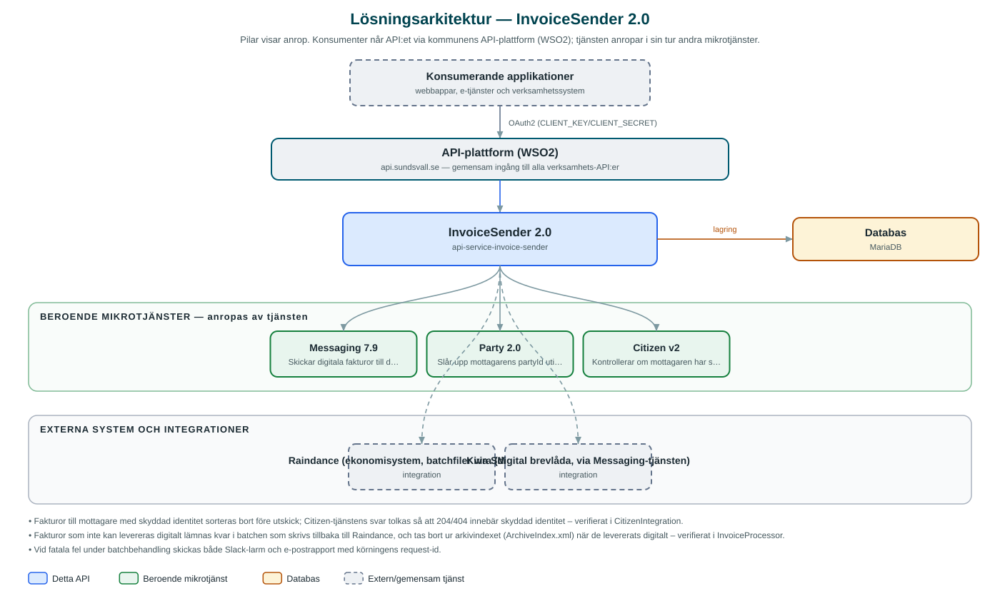

InvoiceSender
Hämtar fakturabatchar från ekonomisystemet Raindance och levererar fakturorna digitalt till invånarnas digitala brevlådor via Kivra.
Om API:et
InvoiceSender flyttar kommunens fakturautskick från papper till digitala kanaler. Tjänsten hämtar batchar med fakturafiler från ekonomisystemet Raindance via en filshare, behandlar varje faktura och skickar dem som digitala fakturor till mottagarnas digitala brevlådor (Kivra) via kommunens Messaging-tjänst.
Varje faktura går igenom en kedja av kontroller: metadata extraheras ur batchens arkivindex, mottagarens personnummer valideras, partyId slås upp och mottagare med skyddad identitet sorteras bort. Fakturor som inte kan levereras digitalt lämnas kvar i batchen, som skrivs tillbaka till Raindance för traditionell utskrift och distribution.
Behandlingen körs schemalagt per batchtyp och kan även triggas manuellt för ett visst datum via API:et, som också erbjuder uppföljning av behandlade batchar. Efter varje körning skickas statusrapport via e-post och Slack-notifiering med utfallet.
Det här gör API:et
- Hämtning från Raindance – Läser batchar med fakturafiler från Raindance via SMB-filshare, enligt konfigurerbara batchtyper per kommun.
- Digital fakturaleverans – Skickar fakturor som digital post till mottagarnas digitala brevlådor (Kivra) via Messaging-tjänsten.
- Kontroller före utskick – Validerar mottagarens personnummer, slår upp partyId och sorterar bort mottagare med skyddad identitet.
- Återkoppling till Raindance – Fakturor som inte kunnat levereras digitalt lämnas kvar och batchen skrivs tillbaka till Raindance för fysisk distribution.
- Manuell körning och uppföljning – Behandlingen kan triggas för ett givet datum via API:et, och behandlade batchar kan listas med paginering och filtrering.
- Status- och felrapporter – Statusrapport per körning via e-post samt Slack-notifieringar, även vid fatala fel.
API-dokumentation
API:ets samtliga resurser, parametrar och datamodeller finns beskrivna i en OpenAPI-specifikation som är hämtad ur källkodsförrådet. Den kan utforskas interaktivt i Swagger UI eller laddas ner som YAML. Programvaruförteckningen (SBOM) listar tjänstens samtliga tredjepartskomponenter med version och licens.
Teknisk dokumentation
Nedan beskrivs hur tjänsten är uppbyggd, vilka andra tjänster den anropar och vad som krävs för att driftsätta den. Informationen är härledd ur källkoden och dess konfiguration på GitHub.
Arkitektur

API:et är en mikrotjänst (Java 25, Spring Boot via kommunens gemensamma tjänsteplattform dept44 (8.0.8), byggd med Maven). Konsumenter når tjänsten via kommunens gemensamma API-plattform (WSO2) på api.sundsvall.se – tjänsten anropas aldrig direkt. Tjänsten anropar i sin tur andra mikrotjänster i kommunens tjänstelandskap. Lagring: MariaDB med Flyway-migrationer; lagrar batchar, fakturaposter och leveransstatus för uppföljning. Övriga integrationer som förekommer i koden: Raindance (ekonomisystem, batchfiler via SMB-filshare), Kivra (digital brevlåda, via Messaging-tjänsten).
Teknikstack
- Språk: Java 25
- Ramverk: Spring Boot via kommunens gemensamma tjänsteplattform dept44 (8.0.8), byggd med Maven
- Databas: MariaDB med Flyway-migrationer; lagrar batchar, fakturaposter och leveransstatus för uppföljning
- Övrigt: jcifs-ng för SMB-åtkomst mot Raindance, Resilience4j (circuit breaker mot Messaging), Thymeleaf för rapportmallar, schemalagd körning per batchtyp
Beroenden till andra mikrotjänster
Tjänsten anropar följande mikrotjänster. Versionerna är hämtade ur källkodens integrationsklienter.
| Tjänst | Version | Användning |
|---|---|---|
| Messaging | 7.9 | Skickar digitala fakturor till digital brevlåda samt status- och felrapporter via e-post och Slack. |
| Party | 2.0 | Slår upp mottagarens partyId utifrån personnummer. |
| Citizen | v2 | Kontrollerar om mottagaren har skyddad identitet innan digital leverans. |
Programvaruförteckning
Tjänsten bygger på 270 tredjepartskomponenter fördelade på 16 olika licenser. Till skillnad från tabellen ovan, som listar andra mikrotjänster, avses här de programbibliotek som ingår i bygget. Se programvaruförteckningen för hela listan.
Konfiguration och driftsättning
- application.yml med URL och OAuth2-klientuppgifter för Messaging, Party och Citizen
- Raindance-anslutning per kommun: SMB-share, inloggningsuppgifter, batchtyper och cron-schema per batch
- MariaDB-anslutning; databasschemat versionshanteras med Flyway
- Mottagare för status- och felrapporter samt Slack-kanal
- Valfri schemalagd omstart av tjänsten via cron-uttryck
Noterbart ur källkoden
- Fakturor till mottagare med skyddad identitet sorteras bort före utskick; Citizen-tjänstens svar tolkas så att 204/404 innebär skyddad identitet – verifierat i CitizenIntegration.
- Fakturor som inte kan levereras digitalt lämnas kvar i batchen som skrivs tillbaka till Raindance, och tas bort ur arkivindexet (ArchiveIndex.xml) när de levererats digitalt – verifierat i InvoiceProcessor.
- Vid fatala fel under batchbehandling skickas både Slack-larm och e-postrapport med körningens request-id.
- Fakturors base64-innehåll maskeras i anropsloggarna via Logbook-filter, och 4xx-svar från Messaging öppnar inte circuit breakern.
- Tjänsten har en inbyggd, konfigurerbar schemalagd omstart (ScheduledRestart) – en ovanlig lösning som är värd att känna till vid drift.
Källkod
Källkoden är öppen och finns hos Sundsvalls kommun på GitHub. I källkodsförrådet finns även instruktioner för att klona, konfigurera och starta tjänsten i egen miljö.